Artemis
Artemis Ecommerce WordPress Theme Documentation
For technical related questions, don't hesitate to send us an email to support@smartwpress.com.
Congratulations for purchasing a stylish premium Multipurpose WordPress Ecommerce theme.
For any question, feel free to contact us, we'll be happy to help you. Please follow this documentation carefully to get started with Artemis theme.
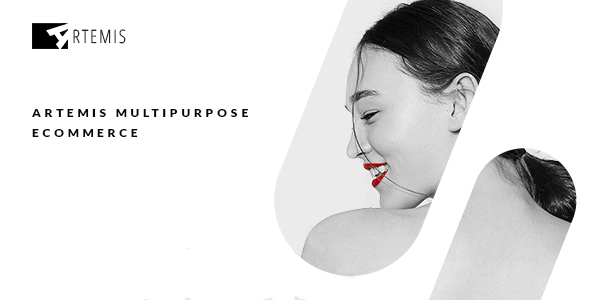
-
Creative and Stylish Design
-
100% Responsive
-
Theme Settings
-
Theme Customiser With Live Preview
-
Custom Colors
-
Different Menu Styles
-
Custom Product Page Styles
-
Custom Page Templates
-
Widget Ready
-
Translation Ready
-
Child Theme Compatible
-
Visual Composer Included
-
Slider Revolution Included
There are two ways to install a WordPress theme.
-
Directly upload the zipped theme file via WordPress admin panel.
-
Upload the unzipped theme folder, directly on your server using a FTP client.
1. Install Artemis Theme Using WordPress Theme Installer
1.1 Log in to WordPress admin dashboard and navigate to Appearance -> Themes -> Add New
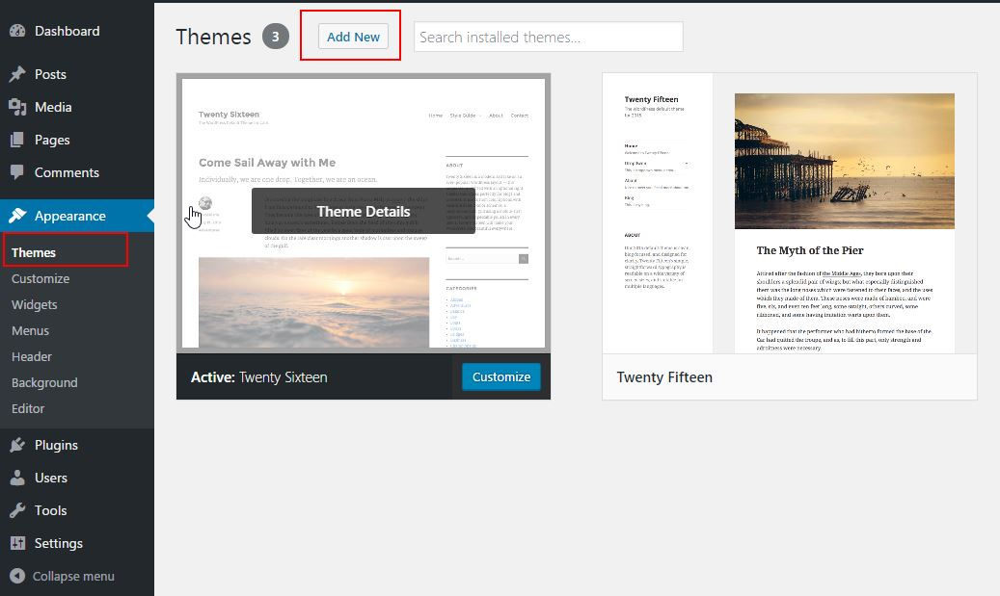
1.2 Press on Upload Theme button.
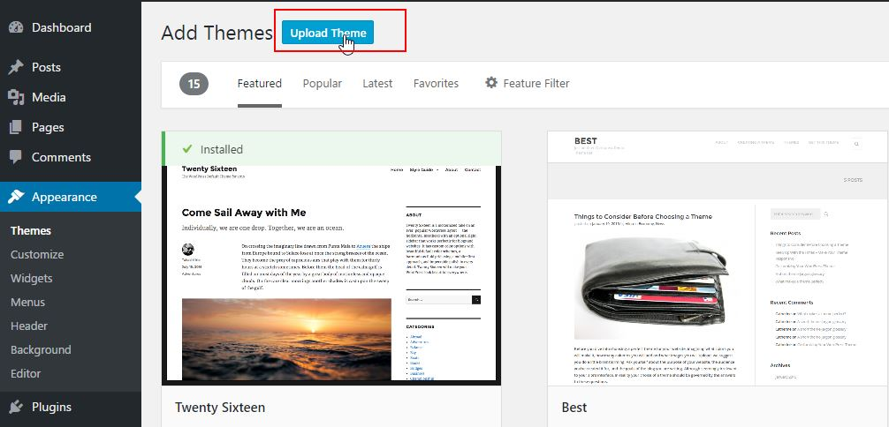
1.3 For upload, choose the installable theme zip file, which can be found inside the archive downloaded from ThemeForest.
1.4 Once the upload has finished, click Install Now then activate the theme.
1.5 You will see the following message:
This theme requires the following plugins:
Envato WordPress Toolkit,
Artemis Core
,
Slider Revolution
and
WPBakery Visual Composer
.
Artemis Core - contains the core functionality related to Artemis theme and is mandatory.
Slider Revolution - is a premium plugin that comes with Artemis theme for free. You need this plugin installed to be able to create slides
Visual Composer - is a premium plugin, and the the best selling layout builder on CodeCanyon. You need this plugin to be able to create a page similar to the front page used for Artemis Demo.
Envato WordPress Toolkit - is a third party plugin that allows you as a customer to be notified when a new theme version will be available.
1.6 Now click on Install link and follow the info message to install and activate the plugins that are coming with the theme.
Please keep in mind that instalation of Artemis Core plugin is mandatory. It is comming with the Artemis theme, and it is required for the theme to work corrrectly. Having the custom post types or widgets or custom visual composer elements in a separate plugin, allows you to keep the data, even if you change the theme.
2. Install Artemis Theme Using a FTP Client.
2.1 Log In to your site using your FTP client, and enter to your WordPress theme folder, wp-content/themes.
2.2 Unzip artemis-swp.zip file and upload artemis-swp folder to [your wordpress installation directory]/wp-content/themes/ location.
2.3 Log into your WordPress admin dashboard and navigate to Appearance -> Themes and activate the teme.
Continue instalation according to step 1.5 and 1.6 descibed above.
Installing WooCommerce plugin
The existing E-commerce functionality is based on WooCommerce plugin. If you need e-commerce functionality, please follow the steps below to install WooCommerce plugin.
I. Please go to Plugins - Add New
II. In the search field, please type WooCommerce
III. Click on Install Now button
IV. Once the plugin is installed, the text on the button will change to Activate. Please press again the button to activate the plugin.
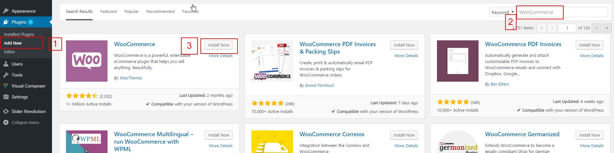
The configuration of Artemis theme is simple and intuitive. Below, we'll describe how to define configure it according to your needs by defining the menu, using theme customizer, theme settings, adding videos, image posts, albums and events.
First, you'll need to create your menu.
Please go to Appearance -> Menus, add a name for your menu and click on Create Menu button. Please check the image below:
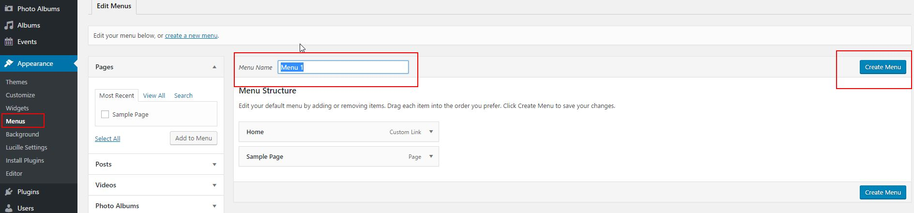
Then please navigate to the second tab - Manage Locations, assigne your newly created menu to the location and click on Save Changes button.
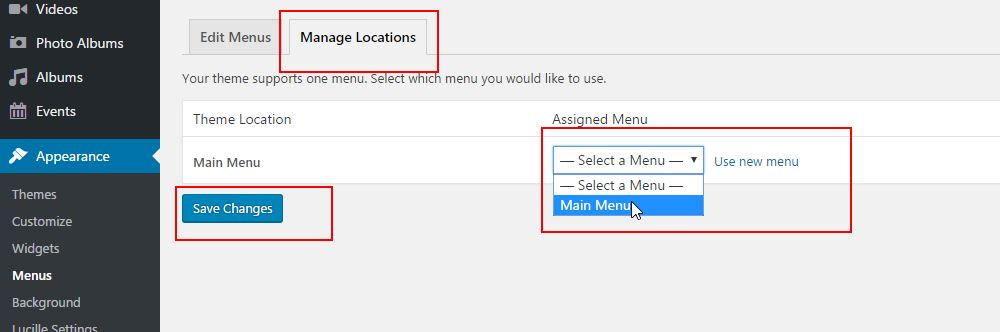
Artemis theme implements WordPress Theme Customizer, that provides the ability to change the layout and preview the changes in real time.
To access the Customizer, please got to your WordPress Dashboard, and select Appearance -> Customize. Your new screen should look like the screenshot below:
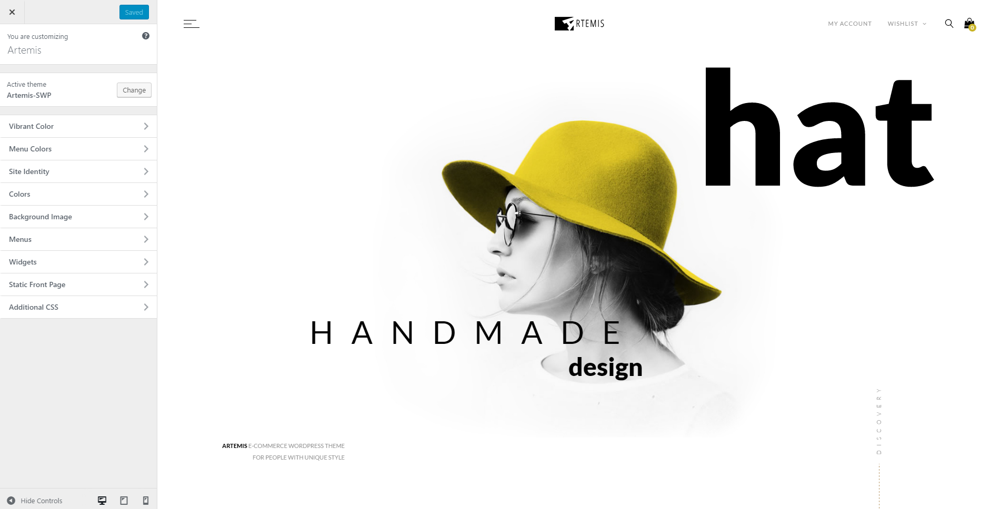
The following customizer options are implemented:
-
Vibrant Color - the color used for links and some other layout elements that stands out
-
Menu Colors - color will be used as site's primary color.
-
Site Identity - customize your site's title, tagline and favicon
-
Colors - choose background color
-
Background Image - the background image
-
Menus - manage menu locations and menus associated with them
-
Widgets - manage footer & sidebar widgets
-
Static front page - choose what to display on front page: latest posts or a static page.
-
Additional CSS - here you can add your own CSS rules that will overwrite the default theme styling.
Theme Settings helps you easily take control over different settings of your website.
To access theme options, please go to Appearance - Artemis Settings. There are five different option tabs:
General Options:
Allows you to customize the following options: add your own logo image, add custom favicon,
add a background image for all the inner pages, change the menu style, change the width for header and footer,
change the default website fonts color scheme, enable or disable sticky menu and back to top button, customize 404 page style,
enable/disable sibar, select title style and enable/disable login popup.
Social Options:
This is the place where you should add the url to the profile pages of your store over several social networks.
Every field that is set will generate a link to your social profile and the proper social icon on the dedicated areas of the website.
Footer Options:
Settings related to footer widget area, and options to change the font color scheme for footer, use a custom background image for footer area and a color overlay,
copyright URL and text, copyright color scheme, background color, and the option to place the social icons to the copyright area.
Contact Data:
The place where you should add your contact details that will be visible on the Contact page template.
Shop:
Settings related to Woocomerce. Select your wishlist page, enable/disable sidebar, select product page template and customize product view mode.
Artemis theme offers the following custom page templates:
-
Default Template - usual page template
-
Custom, ready to use Page Templates
Blog - shows the latest blog posts. For this template, you have the option to choose full width or boxed width layout from the custom meta box under the content area.
Page Contact - render the contact page with the ajax contact form and the contact data
Please insert the the contact data on Appearance - Artemis Settings - Contact Data (tab). This is the place where you insert the contact data and the contact form email. The contact page template will automatically use this data.
If the contact form email is not filled, the WordPress admin email will be used as recipient email address.
Page with Sidebar - standard page template, with a sidebar
Visual Composer Empty Template - empty page template, with no header area. Is a empty template that you can use to create a page from scratch using Visual Composer elements.
Visual Composer Empty Template with Header - empty page template. Is a empty template that you can use to create a page from scratch using Visual Composer elements. It places the heading area on the layout (area with title and breadcrumb navigation)
Wishlist - wishlist page. You need to select this page in Theme Settings -> Shop -> Wishlist
How to create a page based on a custom page template:
Let's assume that you want to create the Contact page.
Go to Pages - Add New. Type a name for your page.
Go to Page Atributes meta from the right side of the content area, and change the page template from the default value (Default Template) to Page Contact.
Click on Publish button.
For custom page templates, you don't need to add content.
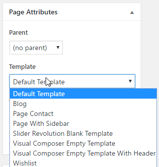
How to add individual page background for a page/post
Artemis theme offers you the opption to select a custom background image for all the inner pages. But you can add a different background image for a certain page.
How to set the generic custom page background image.
This can be done from Appearance - Artemis Settings - General Settings(tab).
How to set individual custom background image for a page.
This can be done from Page Settings meta box below the content area. Edit your page or post and locate Page Settings meta box below the content area. Choose your image and click on Save post button.
You can also add a color overlay with custom opacity, for better text readability.
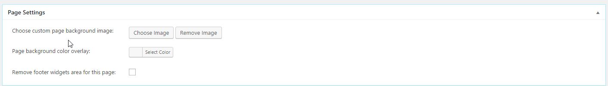
How to switch between different Blog styles
Artemis theme offers the option of selecting different layouts for blog pages. This can be done from Archive&Blog Settings meta box below the content area. To enable this meta box, you need to create the blog page first.
Go to Pages - Add New.
Type a title for your blog page (Blog or News or other name).
Click on Publish button.
Then please go below the content area and locate the Archive&Blog Settings meta box.
Select the layout type.
Click on Save button.
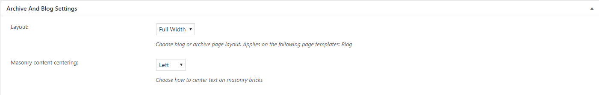
Override WooCommerce product description with Visual Composer
Artemis allows you to create your product page using Visual Composer. Todo this you must select the "Override product description", then you can use Visual Composer on the main descritption field.
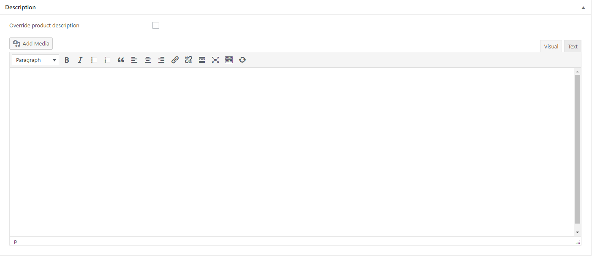
You can create a page from scratch, using Visual Composer elements and based on the Empty Page Template created for this kind of layout.
To do this, you need to create a new page, type a title and select the Visual Composer Empty Template.
Then, click on Backend Editor button and you can start adding visual composer.
Artemis theme has several new visual composer elements dedicated to this theme, that are ready and intuitive to use. All the elements can be found in the Artemis category in visual composer.
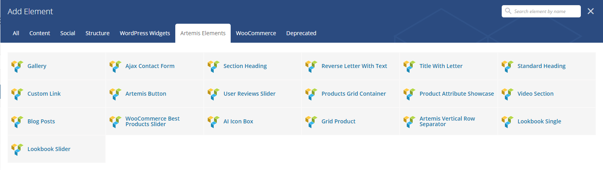
Try to add each element inside a visual composer row element, in this way you can easily set the margins between elements. from Row Settings - Design Options:
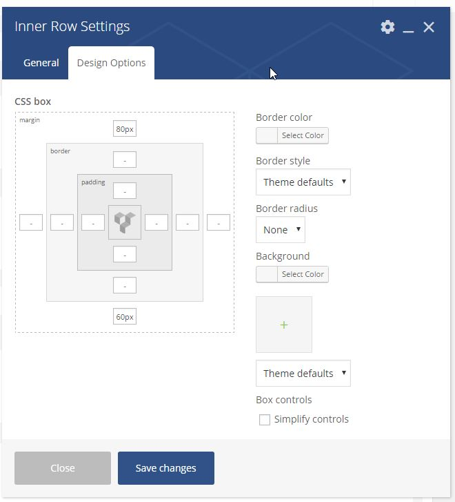
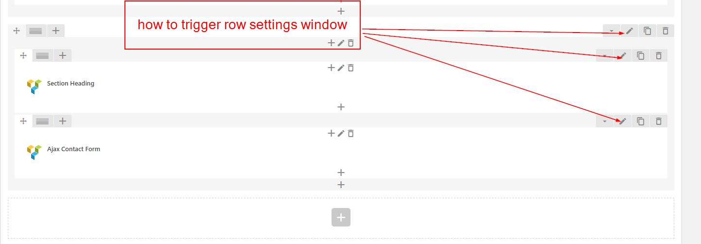
By default, WordPress shows as front page the archive page showing you the latest posts. But you can change this and add your own custom page as static front page.
Go to Settings - Reading.
Select Front Page Displays - A static page
Choose the page you want to set as front page from the dropdown.
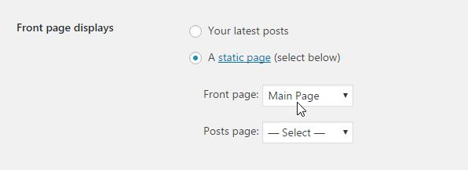